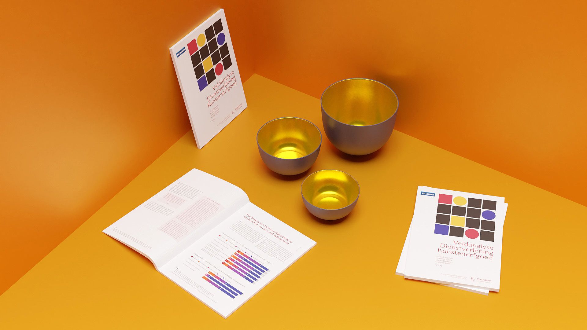

ku leuven
my role
The Catholic University of Leuven is a prominent research university in the city of Leuven, known for its cutting-edge research and sustainable initiatives. Their department of cultural studies was tasked with leading a major research project concerning the state of art heritage in Flanders. I was brought in as Lead UX / UI designer to help the department design two web-based data visualisations and a finalized research dossier.

objectives
The initial objectives included recognizing the importance of art heritage, leading efforts in Flanders, addressing the lack of resources, and increasing practical support and storage space. It emphasizes the value of decentralized approaches, inclusivity, time and resource valorization, effective coordination, a general reference framework, and filling gaps in services and facilities.
In order to help the Flemish government more intuitively understand the relations and interactions between all art heritage organizations active in Flanders, one or more visualization tools needed to be designed.
In order to help the Flemish government more intuitively understand the relations and interactions between all art heritage organizations active in Flanders, one or more visualization tools needed to be designed.
development
We focused on using a robust design system to create two intuitive interfaces that effectively convey the relationships between heritage organizations in Flanders.